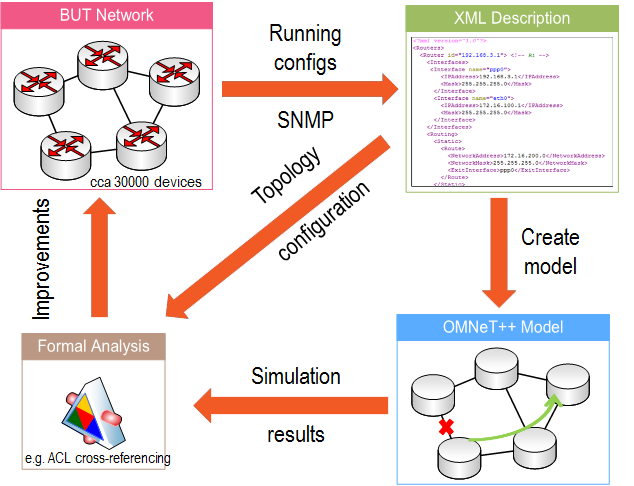

Welcome to the ANSA project web pages
The Automated Network Simulation and Analysis (ANSA) is a long-term project carried by researchers and students at the Brno University of Technology (namely at Faculty of Information Technology) in the Czech Republic. It is dedicated to the development a variety of simulation models compatible with RFC specifications or referential implementations, which extend wired IP network framework INET (thus, the source code is called ANSAINET). Subsequently, these modules and related tools could (one day) allow formal analysis of real networks and their configurations. ANSAINET may be publicly used as the routing/switching baseline for further research initiatives, i.e., in simulations proving (or disproving) certain aspects of networking technologies (e.g., finding bottlenecks and single-point of failures, configuration errors, faulty network states, etc.).
There are three significant goals of this project:
- To develop accurate simulation modules (compatible with referential implementations) for protocols employed in wired networks based on traditional TCP/IP.
- To popularize the usage of simulators as verification and validation tools for network deployments and protocol designs.
- Last but not least, to contribute and to provide support within OMNeT++ community by integrating popular ANSAINET features into original INET.
Features
Basically, we are developing new simulation models for IP-based wired network. So far we have created modules for a variety of unicast routing protocols and modules addressing quality of service. During the last years, we focused on multicast transfers and relevant signalization protocols; these contributions have been already accepted to INET. Nowadays, we are interested once again in routing, namely in first-hop redundancy protocols and advanced routing protocols for service providers.
Following features/protocols are supported in ANSAINET:
- INET improvements
ANSA MultiRoutingTableoffers triple-stack routing information storage for IPv4, IPv6 and CLNSMultiNetworkConfiguratorcapable of static IPv4/IPv6/CLNS addressing and routing from external XML fileANSAInterfaceEntryextending interface entry by parameters like delay, load, virtual forwarder and others- Interconnection between interfaces have labels containing both IPv4 and IPv6 addresses for better clarity in GUI simulation mode
- Gratuitous ARP responses and multicast MAC address processing on Ethernet interface
- Link-layer protocols processing via
LowerMultiplexerconnections
- First-hop redundancy protocols backing up functionality of default gateway
- Link-State routing protocols based on Dijkstra's algorithm
- Intermediate System to Intermediate System (IS-IS)
- (Hybrid) Distance-Vector routing protocols based on Bellman-Ford algorithm and/or Feasibility Conditions
- L2 management protocols
- Loop-Prevention on data-link layer
- Alternative routing concepts to TCP/IP
- Locator/Id Separation Protocol (LISP)
- Dynamic multicast routing
Work in progress for academic year 2016/2017 involves:
- Open-Shortest Path v3 (OSPFv3)
- Multiple Spanning Tree Protocol (MSTP)
- VLAN Trunking Protocol (VTP)
- Comparison of distance-vector protocol efficiency
- IPv6, DHCPv6, SLAAC
In order to model a router and simulate its behavior, we have created a module called ANSARouter. Its functionality, packet processing, and printed outputs are loosely inspired by the Cisco look-and-feel. ANSARouter offers programmable functionality (similar to INET's classical NodeBase and Router module designs) including upto triple-stack capabilities (simultaneously operated IPv4, IPv6 and CLNS network layers). Apart from ANSARouter, we have also a similar node for end-stations called ANSAHost.
The current design of ANSARouter is depicted in the figure below. Comparing to original ancestor, ANSARouter has upgraded routingTable, interfaceTable and networkLayer modules.
Installation and Branches
Installation is pretty simple, follow the cookbook:
- Just clone or download the main branch. This branch already contains the newest version of supported INET (currently INET 3.3.0 in folder
/src/inet) together with ANSAINET extension/src/ansa. - Import the project into OMNeT++ (it is named
ansainet-*, which allows you to have also separate vanillainetproject in the same worspace). - Compile the project; it will take just a little more time than traditional INET.
- Play with ANSAINET; run fingerprinted scenarios in
/examples/ansafolder and check the source codes in/src/ansafolder.
The most up-to-date branch is ansainet-3.3.0 created from INET version 3.3.0 and intended for OMNeT++ 5.0. However, several branches still exist (thou unmainted) in order to provide functionality to a deprecated versions of OMNeT++ simulator. Among these branches are:
ansainet-3.2.1for OMNeT++ 5.0ansainet-3.0for OMNeT++ 4.6ansainet-2.2for OMNeT++ 4.4ansainet-2.1for OMNeT++ 4.3ansainet-2.0for OMNeT++ 4.2.1
Motivation
Network configuration and network topology can be seen as a program directing the network communication. Once the configuration and the topology are specified, one can analyze the behavior of a converged network. The complexity of determination of its behavior is comparable to the complexity of checking the correctness of programs. Therefore, verification of the network behavior including reachability and security properties can be solved using a similar approach as typically used for programs. In this project, we aim to study automatized methods for verification of networks based on the knowledge of the configuration of network devices and the network topology. Besides the building theoretical framework and methodology of the issue, we also plan to deliver tools that demonstrate our approach on real case studies.
Configurations of active devices define network communication. From this point of view, network behavior can be predicted and analyzed using configuration files. This project exploits discrete simulation of a network for automated analysis of security properties. Network topology is formally built using nodes (e.g., routers) and links. Nodes include network interfaces with IP addresses, filtering rules (express using ACLs), and routing processes. Using automated simulation with changing configuration (links going up and down), we can observe and analyze network operation under different scenarios. The goal is to find out weak points of the network design and configuration.
Our research group is mainly focused on automated network simulation and analysis. Usually, we are taking Brno University of Technology network as a baseline. We extract static running configurations and dynamic state via SNMP to generate unified XML description of interesting devices and parts of the network. Using this description, we automatically create an OMNeT++ simulation model and inspect variety of relevant scenarios. Then we apply both topology information and simulation results as inputs to the formal analysis that can suggest us improvements (like to discover ACL rules cross-referencing, find single-point of failures for particular service or review our configuration errors).
References and Results Reproduction
Here is the short list of publications which cited ANSAINET including our own research papers (these ones also link results reproduction Wiki page if availalble):
- Gábor Lencse and István Derka, Experimental Analysis of the Fault Tolerance of the PIM-SM IP Multicast Routing Protocol under GNS3 International Journal of Advanced Computer Science and Applications(IJACSA), 5(5), 2014. http://dx.doi.org/10.14569/IJACSA.2014.050503
- Jozef Papán, IP Fast Reroute, Dissertation thesis, University of Žilina, 2016. http://acmbulletin.fiit.stuba.sk/abstracts/papan2016.pdf
- VESELÝ Vladimír, REK Vít and RYŠAVÝ Ondřej. Enhanced Interior Gateway Routing Protocol with IPv4 and IPv6 Support for OMNeT++. Advances in Intelligent Systems and Computing. 2016, vol. 2015, no. 1, pp. 65-85. ISSN 2194-5357. Availabe from: http://link.springer.com/chapter/10.1007%2F978-3-319-26470-7_4.
- VESELÝ Vladimír and RYŠAVÝ Ondřej. Locator/Id Split Protocol Improvement for High-Availability Environment. In: Proceedings of The Eleventh International Conference on Networking and Services ICNS 2015. Roma: The International Academy, Research and Industry Association, 2015, pp. 61-67. ISBN 978-1-61208-404-6. Availabe from: https://www.thinkmind.org/download.php?articleid=intsys_v8_n34_2015_22.
- VESELÝ Vladimír and RYŠAVÝ Ondřej. Map-Cache Synchronization and Merged RLOC Probing Study for LISP. The International Journal on Advances in Intelligent Systems. 2015, vol. 2015, no. 34, pp. 494-506. ISSN 1942-2679. Availabe from: http://www.iariajournals.org/intelligent_systems/intsys_v8_n34_2015_paged.pdf.
- VESELÝ Vladimír, BLOUDÍČEK Jan and RYŠAVÝ Ondřej. Enhanced Interior Gateway Routing Protocol for OMNeT++. In: Proceedings of the 4th International Conference on Simulation and Modeling Methodologies, Technologies and Applications (SIMULTECH 2014). Wien: SciTePress - Science and Technology Publications, 2014, pp. 50-58. ISBN 978-989-758-045-1. Availabe from: http://ieeexplore.ieee.org/document/7094999/.
- VESELÝ Vladimír, MAREK Marcel, RYŠAVÝ Ondřej and ŠVÉDA Miroslav. Multicast, TRILL and LISP Extensions for INET. International Journal on Advances in Networks and Services. 2014, vol. 2014, no. 4, pp. 240-251. ISSN 1942-2644. Availabe from: http://citeseerx.ist.psu.edu/viewdoc/citations;jsessionid=9327E6202E5FCD817A7045122B7B32C1?doi=10.1.1.684.9937.
- VESELÝ Vladimír, RYŠAVÝ Ondřej and ŠVÉDA Miroslav. Protocol Independent Multicast in OMNeT++. In: The Tenth International Conference on Networking and Services. 74400 CHAMONIX MONT-BLANC: The International Academy, Research and Industry Association, 2014, pp. 132-137. ISBN 978-1-61208-330-8. Availabe from: https://www.thinkmind.org/download.php?articleid=icns_2014_6_50_10121.
- VESELÝ Vladimír, MATOUŠEK Petr and ŠVÉDA Miroslav. Multicast simulation and modeling in OMNeT++. In: SimuTools '13 Proceedings of the 6th International ICST Conference on Simulation Tools and Techniques. Brussels: International Communication Sciences and Technology Association, 2013, pp. 142-145. ISBN 978-1-4503-2464-9. Availabe from: http://dl.acm.org/citation.cfm?id=2512752.
- VESELÝ Vladimír, RYŠAVÝ Ondřej and ŠVÉDA Miroslav. IPv6 Unicast and IPv4 Multicast Routing in OMNeT++. In: Proceedings of the IEEE 6th International ICST Conference on Simulation Tools and Techniques. Cannes: International Communication Sciences and Technology Association, 2013, pp. 1-4. ISBN 978-1-936968-47-3. Availabe from: http://dl.acm.org/citation.cfm?id=2512785.
- VESELÝ Vladimír and ŠVÉDA Miroslav. L2 protocols in OMNeT++. IP Networking 1 -- Theory and Practice. Žilina: Zilina University Publisher, 2012, pp. 37-40. ISBN 978-80-554-0494-3. Availabe from: http://www.fit.vutbr.cz/~ivesely/pubs.php?id=9961.
Authors and Contributions
The following list contains all student's contributions (including bachelor's, master's and doctoral thesis) for ANSAINET through the whole project run:
- RYBOVÁ, Veronika. Modelling and Simulation of Network Design Guides for IP Routing. Brno, 2009. Available from: http://www.fit.vutbr.cz/study/DP/BP.php?id=8351. Bachelor's Thesis. Brno University of Technology, Faculty of Information Technology. 2009-06-16. Supervisor Matoušek Petr.
- SIVÁK, Vladimír. Modelling Cisco Router in Simulation Tool OMNeT++. Brno, 2009. Available from: http://www.fit.vutbr.cz/study/DP/BP.php?id=7851. Bachelor's Thesis. Brno University of Technology, Faculty of Information Technology. 2009-06-16. Supervisor Matoušek Petr.
- SUCHOMEL, Tomáš. OMNeT++ Extension with ACL Filtering Module. Brno, 2009. Available from: http://www.fit.vutbr.cz/study/DP/BP.php?id=7854. Bachelor's Thesis. Brno University of Technology, Faculty of Information Technology. 2009-06-16. Supervisor Matoušek Petr.
- DANKO, Martin. Modelling OSPF Routing Protocols Using OMNeT++ Simulator. Brno, 2009. Available from: http://www.fit.vutbr.cz/study/DP/BP.php?id=7989. Bachelor's Thesis. Brno University of Technology, Faculty of Information Technology. 2009-06-15. Supervisor Ryšavý Ondřej.
- SCHERFEL, Peter. Simulation of Network Behaviour Based on Analysis of Configuration of Active Network Devices. Brno, 2009. Available from: http://www.fit.vutbr.cz/study/DP/BP.php?id=7852. Bachelor's Thesis. Brno University of Technology, Faculty of Information Technology. 2009-06-16. Supervisor Ryšavý Ondřej.
- TLOLKA, Martin. Simulation of EIGRP Protocol Behavior Using OMNeT++. Brno, 2009. Available from: http://www.fit.vutbr.cz/study/DP/BP.php?id=7853. Bachelor's Thesis. Brno University of Technology, Faculty of Information Technology. 2009-06-16. Supervisor Ryšavý Ondřej.
- MATELEŠKO, Petr. Multicast Simulation in OMNeT++. Brno, 2010. Available from: http://www.fit.vutbr.cz/study/DP/BP.php?id=9485. Bachelor's Thesis. Brno University of Technology, Faculty of Information Technology. 2010-06-17. Supervisor Matoušek Petr.
- DANKO, Martin. Modelling QoS in Computer Networks. Brno, 2012. Availabe from: http://www.fit.vutbr.cz/study/DP/DP.php.en?id=10950. Master's Thesis. Brno University of Technology, Faculty of Information Technology. 2012-06-18. Supervisor Ryšavý Ondřej.
- ČERNÝ, Marek. IPv6 Modelling in OMNeT++. Brno, 2011. Available from: http://www.fit.vutbr.cz/study/DP/DP.php?id=11892. Master's Thesis. Brno University of Technology, Faculty of Information Technology. 2011-06-22. Supervisor Veselý Vladimír.
- KRAUS, Zdeněk. Modelling and Reliability Analysis of Campus Network at the BUT. Brno, 2011. Available from: http://www.fit.vutbr.cz/study/DP/DP.php?id=9468. Master's Thesis. Brno University of Technology, Faculty of Information Technology. 2011-06-22. Supervisor Veselý Vladimír.
- HRNČIŘÍK, Matej. Modelling of L2 Loop-Preventing Protocols. Brno, 2012. Available from: http://www.fit.vutbr.cz/study/DP/DP.php?id=14268. Master's Thesis. Brno University of Technology, Faculty of Information Technology. 2012-06-20. Supervisor Veselý Vladimír.
- RYBOVÁ, Veronika. Multicast Routing Modelling in OMNeT++. Brno, 2012. Available from: http://www.fit.vutbr.cz/study/DP/DP.php?id=14139. Master's Thesis. Brno University of Technology, Faculty of Information Technology. 2012-06-21. Supervisor Veselý Vladimír.
- MALIK, Adam. Multicast Distribution Trees Modelling in OMNeT++. Brno, 2013. Available from: http://www.fit.vutbr.cz/study/DP/DP.php?id=15213. Master's Thesis. Brno University of Technology, Faculty of Information Technology. 2013-06-20. Supervisor Veselý Vladimír.
- MAREK, Marcel. Modelling IS-IS and TRILL. Brno, 2013. Available from: http://www.fit.vutbr.cz/study/DP/DP.php?id=15481. Master's Thesis. Brno University of Technology, Faculty of Information Technology. 2013-06-20. Supervisor Veselý Vladimír.
- PROCHÁZKA, Tomáš. Modelling PIM-SM in OMNeT++. Brno, 2013. Available from: http://www.fit.vutbr.cz/study/DP/DP.php?id=15214. Master's Thesis. Brno University of Technology, Faculty of Information Technology. 2013-06-17. Supervisor Veselý Vladimír.
- TRHLÍK, Jiří. Modelling of Distance-Vector Routing Protocols. Brno, 2013. Available from: http://www.fit.vutbr.cz/study/DP/DP.php?id=15211. Master's Thesis. Brno University of Technology, Faculty of Information Technology. 2013-06-17. Supervisor Veselý Vladimír.
- VÍTEK, Petr. Modelling Gateway Redundancy Protocols. Brno, 2013. Available from: http://www.fit.vutbr.cz/study/DP/DP.php?id=15253. Master's Thesis. Brno University of Technology, Faculty of Information Technology. 2013-06-17. Supervisor Veselý Vladimír.
- BLOUDÍČEK, Jan. Modelling of EIGRP Routing Protocol. Brno, 2014. Available from: http://www.fit.vutbr.cz/study/DP/DP.php?id=16695. Master's Thesis. Brno University of Technology, Faculty of Information Technology. 2014-06-24. Supervisor Veselý Vladimír.
- MRÁZEK, Jakub. Modelling Link-State OSPFv3 Routing Protocol. Brno, 2014. Available from: http://www.fit.vutbr.cz/study/DP/DP.php?id=16877. Master's Thesis. Brno University of Technology, Faculty of Information Technology. 2014-06-25. Vedoucí práce Veselý Vladimír.
- REK, Vít. Modelling of Babel Routing Protocol. Brno, 2015. Available from: http://www.fit.vutbr.cz/study/DP/DP.php?id=17681. Master's Thesis. Brno University of Technology, Faculty of Information Technology. 2015-06-25. Supervisor Veselý Vladimír.
- HOLUŠA, Jan. Modelling HSRP and GLBP Gateway Redundancy Protocols. Brno, 2016. Available from: http://www.fit.vutbr.cz/study/DP/DP.php?id=18727. Master's Thesis. Brno University of Technology, Faculty of Information Technology. 2016-06-21. Supervisor Veselý Vladimír.
- RAJCA, Tomáš. Modelling of L2 Management Protocols. Brno, 2016. Available from: http://www.fit.vutbr.cz/study/DP/DP.php?id=18685. Master's Thesis. Brno University of Technology, Faculty of Information Technology. 2016-06-21. Supervisor Veselý Vladimír.